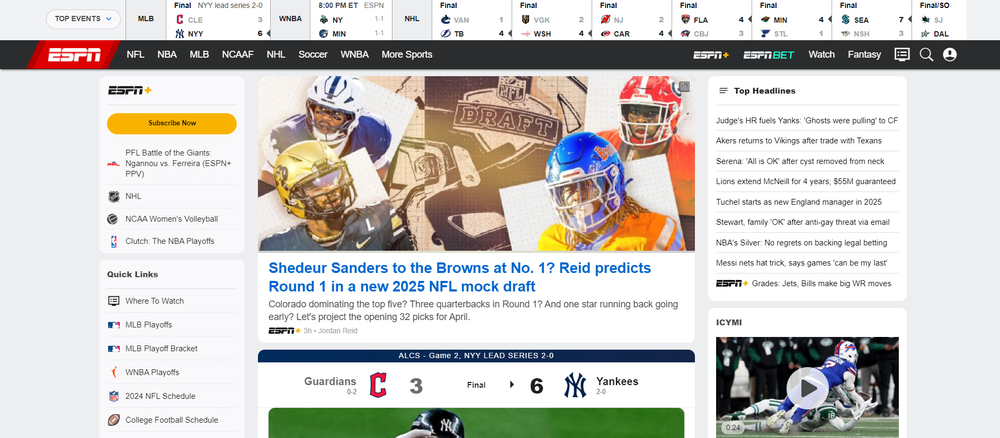
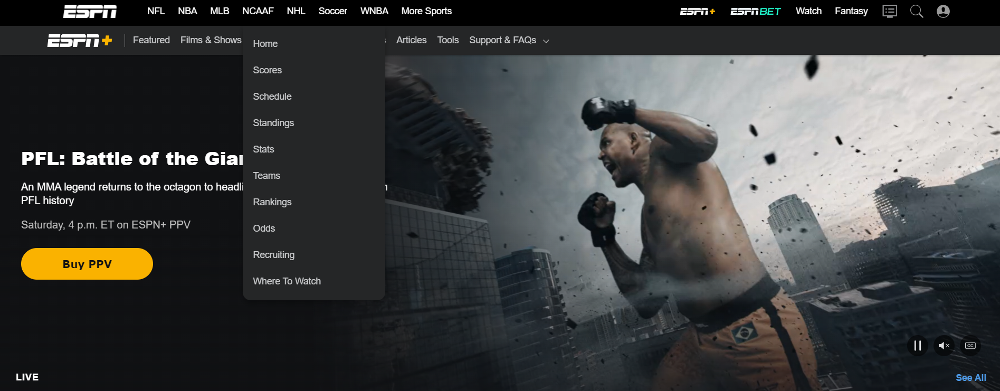
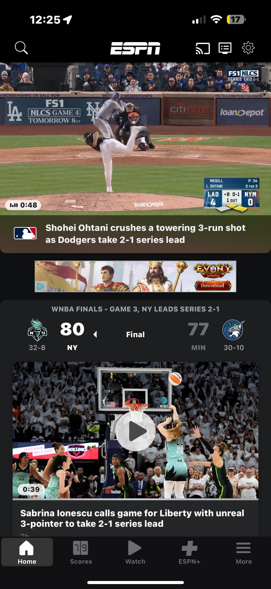
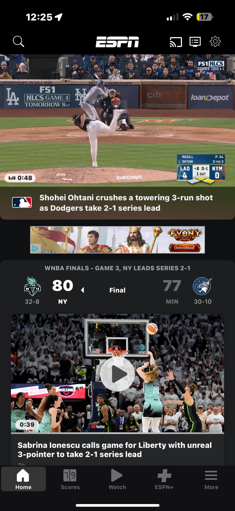
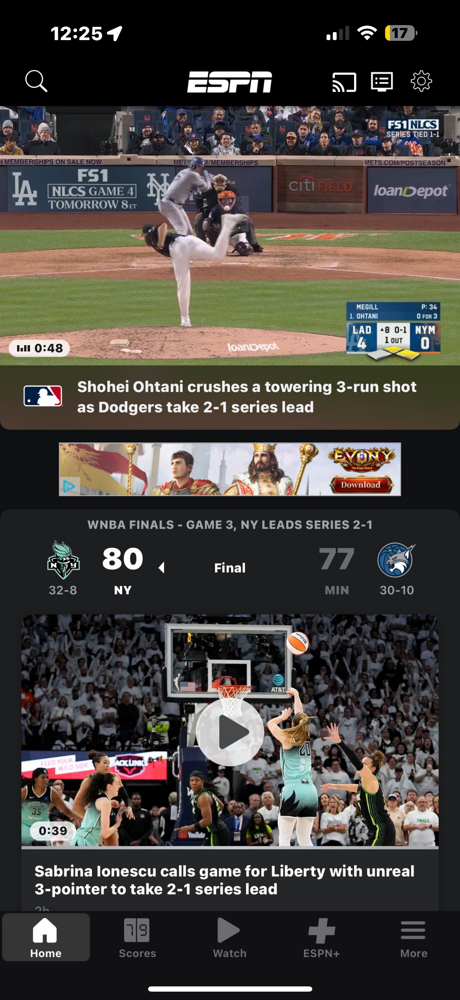

ESPN's website is a comprehensive hub for sports journalism, offering up-to-date news, live scores, and a wide array of multimedia content. From game highlights to expert opinions, ESPN keeps fans informed and engaged, whether they're casual followers or die-hard enthusiasts. The site also provides access to live streaming services, schedules, and in-depth analyses. Its structure reflects the brand’s core mission: to be a one-stop destination for sports lovers across the world. With coverage of both professional and collegiate sports, ESPN maintains its position as a leader in sports media, catering to fans globally.
Content
ESPN’s website delivers a massive amount of content tailored to sports enthusiasts of all levels. This includes articles on breaking sports news, player interviews, and expert analysis that keep users up-to-date on the latest developments. Additionally, the site features live score updates across popular sports like football, basketball, baseball, soccer, and many more. Its video content, which includes highlights, live broadcasts, and podcasts, enhances the overall experience. One strength is the diversity of media formats, allowing users to consume content in ways that suit them best. However, intrusive ad placements, such as banner and autoplay video ads, frequently interrupt the reading experience, sometimes leading to user frustration.
Moreover, some articles are packed with embedded videos and promotional material, distracting from the primary content. Though ESPN excels in providing timely and informative sports journalism, the clutter can sometimes make it difficult to navigate and fully appreciate the information presented. For those focused on specific stories or scores, this distraction detracts from the website’s effectiveness.

Visual Appeal/UI
ESPN’s visual appeal is strong, thanks to its consistent use of bold typography and the well-established color scheme of red, black, and white. The homepage prominently displays top stories with eye-catching headlines and high-resolution images, immediately grabbing the user’s attention. This visual hierarchy makes it easy for users to find key content such as scores, trending stories, and video highlights. The website uses a structured grid format, which is visually pleasing and contributes to an intuitive navigation experience.
While the color scheme aligns well with ESPN's branding, there is a notable downside: the overwhelming amount of promotional material and advertisements, which clutter the layout. These ads often compete for attention, reducing the effectiveness of the well-constructed visual hierarchy. Additionally, some sections on the site lack sufficient spacing between elements, leading to an overcrowded feel. Nevertheless, the design remains functional and visually engaging, but with potential for a more streamlined presentation that focuses on content delivery rather than external distractions.

Interactivity/UX
The interactivity and user experience on ESPN’s website is generally impressive. The site features interactive elements such as live scoreboards, game schedules, and video highlights, allowing users to engage with the content dynamically. The top navigation bar remains sticky, meaning it follows users as they scroll down the page, providing easy access to other sections without needing to scroll back to the top. However, there is one comment on it that will be made in the recommendations section. The search functionality is robust, quickly returning relevant results, which is especially useful for fans looking for specific players, teams, or matches.
However, the overall performance of the site can sometimes lag, particularly when multiple live videos or scoreboards are running simultaneously. This issue becomes more prominent on mobile devices, where certain interactive elements, such as scoreboards, are not fully optimized for smaller screens. Users on mobile often experience cramped layouts that require excessive zooming or scrolling to access the information they need. Additionally, while the desktop version generally performs well, ESPN could benefit from further optimizing its mobile experience by streamlining content and improving load times, especially during live events or games.
Recommendations
To significantly improve the user experience on ESPN's website, the platform should consider developing dedicated pages for each sport, styled in a manner consistent with the homepage. This would allow users to easily navigate to their preferred sports, accessing tailored content that meets their interests without the overwhelming clutter of dropdown menus. By presenting relevant articles, videos, and updates specific to each sport on its dedicated page, ESPN can create a more focused and engaging experience for its users. This tailored approach not only streamlines navigation but also enhances user satisfaction, allowing sports fans to find the content they crave more efficiently.
In addition to this structural change, optimizing the mobile experience is crucial for catering to the growing number of users accessing the site on smartphones and tablets. The mobile version should mirror the full-size homepage in terms of layout and style, ensuring that users can navigate seamlessly without sacrificing content quality or accessibility. By making the site responsive, ESPN can ensure that interactive elements, such as live scoreboards and video highlights, function smoothly across all devices. These enhancements would ultimately foster greater engagement and loyalty among users, as they find it easier to access the sports content they love, whether they’re at home or on the go.

Conclusion
ESPN’s website is undeniably a leader in the sports media industry, offering a wide range of content and interactive features that keep fans engaged. Its blend of live updates, video highlights, and expert analysis ensures that sports enthusiasts have everything they need in one place. However, certain areas of the user experience, such as the navigation bar and mobile optimization, need improvement. By making the website more responsive without conceding many of the visual elements that form their strengths, ESPN could enhance its already strong offering, making the site even more user-friendly and accessible to all sports fans on all devices.
 
